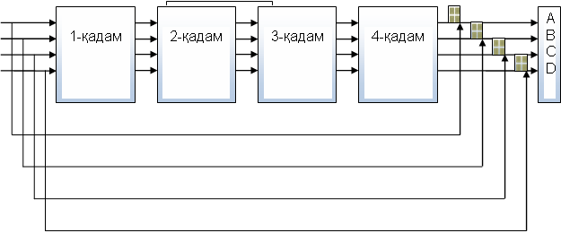

MD 5 х э ш - ф у н к ц и я с и
MD 5 хеш-функцияси калитсиз хеш-функциялар туркумига мансуб бўлиб, Массачусетс технологиялар институти профессори Р. Ривест томонидан 1992 йилда тақдим қилинган.
MD 5 хэш-функциясида хешланувчи маълумот узунлиги иҳтиёрий бўлиб, хэш қиймат узунлиги 128 бит кўринишида олинади.
MD 5 хэш-функциясида хешланувчи маълумот 512 битлик блокларга ажратилиб, улар 16 та 32 битлик қисм блокларга ажратилади ва улар устида амаллар бажарилади.
Масалан, узунлиги b бит бўлган (бу ерда b иҳтиёрий манфий бўлмаган бутун сон), маълумот берилган ва бу маълумотнинг битлари m0 m1 ... m(b-1) тартибда ёзилган.
Хэш қийматни ҳисоблаш учун қуйидаги бешта босқич бажарилади:
1-босқич. Тўлдириш битларини қўшиш.
Берилган маълумот узунлиги 512 модул бўйича 448 билан таққосланадиган (маълумот узунлиги ? 448 mod 512) кўринишда тўлдирилади, яъни, кенгайтирилган маълумотнинг узунлиги унга энг яқин бўлган 512 га каррали бўлган сондан 64 битга кичик бўлиши керак. Тўлдириш ҳамма вақт хаттоки маълумот узунлиги 512 модул бўйича 448 билан таққосланадиган бўлса ҳам бажарилади.
Тўлдириш қуйидаги тартибда амалга оширилади: Маълумотга қиймати 1 га тенг бўлган битта бит қўшилади, қолган битлар эса 0 лар билан тўлдирилади. Шунинг учун қўшилган битлар сони 1 дан 512 тагача бўлади.
2-босқич. Маълумотнинг узунлигини қўшиш.
1-босқичнинг натижасига берилган маълумот узунлигининг 64 битлик қиймати қўшилади. Агар маълумотнинг узунлиги 264 битдан катта бўлса, бу узунлик mod 264 бўйича олиниб қўшилади. Шундай қилиб, биринчи иккита босқич бажарилгандан кейин узунлиги 512 битга каррали бўлган маълумот олинади, яъни кенгайтирилган маълумот узунлиги 16 та 32 битлик сўздан иборат блок узунлигига каррали бўлади.
Натижада хосил қилинган маълумот сўзларини М[0,...,N-1] орқали белгилаймиз, у холда N сони 16 га каррали бўлади. Шундай қилиб N = L ? 16 бўлади.
3- босқич. Хэш қиймат учун буфер инициализация қилиш.
Хэш-функциянинг оралиқ ва охирги натижаларини сақлаш учун 128 битлик буфердан фойдаланилади. Бу буферни тўртта 32 битлик А, B, C, D регистрлар кўринишида тасвирлаш мумкин. Бу регистрларга 16 лик саноқ системасидаги қуйидаги бошланғич қийматлар берилади:
А = 0х01234567
B = 0х89ABCDEF
C = 0хFEDCBA98
D = 0х76543210
4-босқич. Маълумотни 512 битлик блокларга ажратиб кайта ишлаш.
Аргументи ва қиймати 32 битлик сўз бўладиган тўртта ёрдамчи функцияни аниқлаймиз:
F(X,Y,Z) = (X /\ Y) \/ ( u X /\ Z)
G(X,Y,Z) = (X /\ Z) \/ (Y /\ u Z)
H(X,Y,Z) = X A Y A Z
I(X,Y,Z) = Y A (X \/ u Z)
бу ерда, битлар бўйича мантикҳқий AND, OR, NOT, XOR амаллари мос равишда \/, /\, u, A белгилари билан ифодаланган.
Бу босқичда синус функцияси асосида 64 та сўздан қурилган T[1,...,64] жадвалдан фойдаланилади. T[i]=[4294967296?abs(sin(i))] бўлиб, жадвалнинг i – элементини ифодалайди. Бу ерда [q] ифода q соннинг бутун қисмини билдиради, i эса радианларда ифодаланган.
Ушбу босқичда қуйидаги амаллар бажарилади.
Хар бир 16 сўзлик блок қайта ишланади.
for i = 0 to N/16 – 1 do i- блок X га ёзиб олинади.
for j = 0 to 15 do X[j] = M[i*16 + j].
A нинг қиймати AA га, B нинг қиймати BB га, C нинг қиймати CC га, D нинг қиймати DD га ёзиб олинади.
AA = A
BB = B
CC = C
DD = D
1-қадам:
[abcd k s i] ифода қуйидаги амални билдиради:
a = b + ((a+ F(b,c,d) +X[k] +T[i]) <<< s).
Қуйидаги 16 та амал бажарилади:
[ABCD 0 7 1] [DABC 1 12 2] [CDAB 2 17 3] [BCDA 3 22 4]
[ABCD 4 7 5] [DABC 5 12 6] [CDAB 6 17 7] [BCDA 7 22 8]
[ABCD 8 7 9] [DABC 9 12 10] [CDAB 10 17 11] [BCDA 11 22 12]
[ABCD 12 7 13] [DABC 13 12 14] [CDAB 14 17 15] [BCDA 15 22 16]
2-қадам:
[abcd k s i] ифода қуйидаги амални билдиради:
a = b+ ((a + G(b,c,d) +X[k] +T[i]) <<< s).
Қуйидаги 16 та амал бажарилади.
[ABCD 1 5 17] [DABC 6 9 18] [CDAB 11 14 19] [BCDA 0 20 20]
[ABCD 5 5 21] [DABC 10 9 22] [CDAB 15 14 23] [BCDA 4 20 24]
[ABCD 9 5 25] [DABC 14 9 26] [CDAB 3 14 27] [BCDA 8 20 28]
[ABCD 13 5 29] [DABC 2 9 30] [CDAB 7 14 31] [BCDA 12 20 32]
3-қадам:
[abcd k s i] ифода қуйидаги амални билдиради:
a = b + ((a + H(b,c,d)+ X[k] + T[i]) <<< s).
Қуйидаги 16 та амал бажарилади.
[ABCD 5 4 33] [DABC 8 11 34] [CDAB 11 16 35] [BCDA 14 23 36]
[ABCD 1 4 37] [DABC 4 11 38] [CDAB 7 16 39] [BCDA 10 23 40]
[ABCD 13 4 41] [DABC 0 11 42] [CDAB 3 16 43] [BCDA 6 23 44]
[ABCD 9 4 45] [DABC 12 11 46] [CDAB 15 16 47] [BCDA 2 23 48]
4-қадам:
[abcd k s i] ифода қуйидаги амални билдиради:
a = b + ((a + I(b,c,d) + X[k] + T[i]) <<< s).
Қуйидаги 16 та амал бажарилади.
[ABCD 0 6 49] [DABC 7 10 50] [CDAB 14 15 51] [BCDA 5 21 52]
[ABCD 12 6 53] [DABC 3 10 54] [CDAB 10 15 55] [BCDA 1 21 56]
[ABCD 8 6 57] [DABC 15 10 58] [CDAB 6 15 59] [BCDA 13 21 60]
[ABCD 4 6 61] [DABC 11 10 62] [CDAB 2 15 63] [BCDA 9 21 64]
Қуйидаги қўшиш амали бажарилади.
A = A + AA
B = B + BB
C = C + CC
D = D + DD
MD 5 хэш-функциясида битта регистр қийматини ҳисоблаш қуйидаги расмда келтирилган:

MD 5 да битта операциянинг бажарилиш кетма-кетлиги қуйидаги расмда келтирилган:

5-босқич. Натижа.
Маълумотнинг хэш қиймати А, B, C, D регистрлардаги қийматларни бирлаштириш натижасида ҳосил қилинади.
MD 5 хэш-функция ёрдамида маълумотларни хэшлаш жараёни, бошқа хэш-функцияларга нисбатан анча тез амалга оширилади. Бунинг сабаби функцияда, осон ҳисобланадиган \/, /\, u, A амаллари ишлатилган. Битта операция тҳртта қадамда амалга оширилади. Барча амаллар бажарилгандан сўнг, тўртта регистрдаги қийматлар бирлаштирилиб, хэш қиймат хосил қилинади, шу олинган охирги хэш қиймат ҳисобланади.